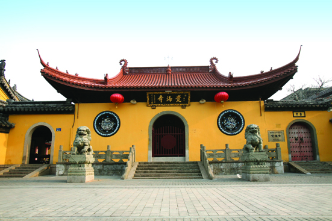

嘉兴市文物保护网 · 市级文物保护单位 · 2014-06-17 · 原文

觉海寺位于嘉兴市南湖区建设街道斜西街435号，始建于南宋理宗淳祐九年(1249)。旧称报忠观，元至正二十四年(1364)改观为寺，至正末年因战争遭毁，明永乐十五年（1417）重建，清雍正十一年(1733)奉敕改名为“觉海寺”，雍正十二年(1734)授御书“觉海寺”匾额，清代名僧玉琳琳国师任主持，属佛家“禅宗”的“临济派”。寺院中轴对称，面积6132平方米，中轴由南向北依次为前殿天王殿、中殿大雄宝殿、后殿三圣殿；中轴西由南向北依次为钟楼、二层楼厢房、地藏殿；中轴东由南向北依次为库房、斋堂、厨房、厢房。另外，南大门西侧设有法物流通处。寺内仅三圣殿为明代建筑，其余皆为建国后重建。三圣殿屋架由楠木修成，寺内供奉